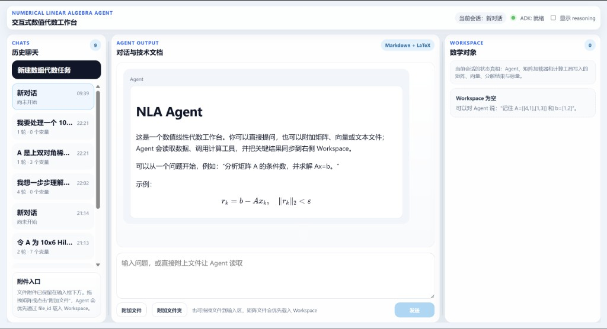

Agent 编排
Google ADK root_agent 入口，注册数值计算、Workspace、记忆、文件读取等工具。
Numerical Linear Algebra Agent
本项目是一个面向中文数值线性代数任务的 Agent 系统。它以 Google ADK 为编排层，结合 NumPy/SciPy、LAPACK/BLAS、稀疏矩阵工具、Workspace 状态管理和 React 前端工作台，用于辅助完成线性方程组、最小二乘、特征值、SVD、矩阵文件读取、大规模稀疏问题和数值稳定性分析等任务。
项目主体位于 NLA_Master，后端 Agent、数值计算工具、记忆模块、测试文档和前端工程都在该目录下。
NLA_Master/
agent.py # ADK root_agent 组装与工具注册
policy.py # 任务路由、前提检查、算法选择
linalg_backend.py # LAPACK/BLAS 后端封装
sparse_backend.py # 稀疏矩阵求解与迭代算法
parsers.py # CSC / Matrix Market 读取
workspace.py # 会话级 Workspace 与句柄协议
upload_api.py # 矩阵上传 API
memory/ # 长期记忆模块
tests/ # 后端单元测试
frontend/ # React 前端工作台与说明网站
前端位于 NLA_Master/frontend，使用 Vite + React + TypeScript。当前主要页面是三栏工作台：左侧历史/文件，中间对话，右侧 Workspace。

后端采用单 root_agent 架构。LLM 负责理解用户意图和组织解释，实际数值计算由 Python 工具完成。Workspace 保存真实矩阵对象，避免把大矩阵直接放入模型上下文。
Google ADK root_agent 入口，注册数值计算、Workspace、记忆、文件读取等工具。
封装 LAPACK/BLAS 能力，包括线性方程、最小二乘、GEMM 和通用 driver 调用。
基于 SciPy sparse 支持稀疏直接法、CG/GMRES 和部分特征值计算。
保存矩阵、向量、分解结果和诊断量，提供摘要、统计、结构和切片接口。
线性方程、最小二乘、矩阵乘法、特征值、SVD、伪逆、矩阵函数、稀疏求解和迭代算法均已纳入能力测试范围。
CSC 文本、Matrix Market 对称格式、上传 URI 与 Workspace 句柄流程已可用于评测。
已具备 Vite + React 三栏交互工作台和独立静态汇报页，后续重点是组件拆分、会话隔离、对象卡片和诊断面板。
40 题人工 benchmark 已全部记录 3/3，下一阶段需要把高价值用例固化为自动化回归。
全部测试题已有 3/3 评分记录，总分 120/120。
评测覆盖 MATLAB 替代、稀疏矩阵、交互策略、SVD、矩阵函数和大规模迭代算法等方向。后续重点是把人工 benchmark 中的关键用例迁移为自动化回归测试。
# 后端 Agent CLI
adk run NLA_Master
# ADK Web 服务
adk web --port 8000
# 矩阵上传 API
uvicorn NLA_Master.upload_api:app --port 8001
# 前端工作台与说明网站
cd NLA_Master/frontend
npm run dev